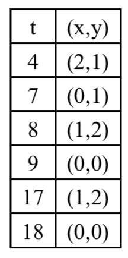
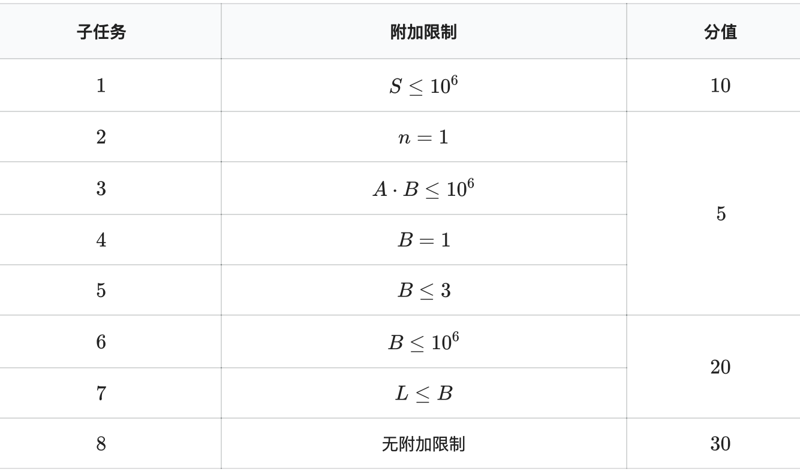

【样例 1 说明】
对于第一个样例，装置屏幕将显示如下这些数对。

共有四个不同的数对：$(0,0),(0,1),(1,2),(2,1)$。
【数据范围与提示】
对于全部数据，$1 \le n \le 10^6,1 \le A,B \le 10^{18},0\le l_i \le r_i \le 10^{18},r_i < l_i+1$。
令 $S=\sum^n_{i=1}(r_i-l_i+1)$与$L=\max_{i=1}^n(r_i-l_i+1)$。
详细子任务附加限制与分值如下表。（comet 不支持APIO评分方式）

子任务 1：测试点 4-20
子任务 2：测试点 21-24
子任务 3：测试点 25-29
子任务 4：测试点 30-33
子任务 5：测试点 34-38
子任务 6：测试点 39-57
子任务 7：测试点 58-74
子任务 8：测试点 75-87
 Comet OJ
Comet OJ